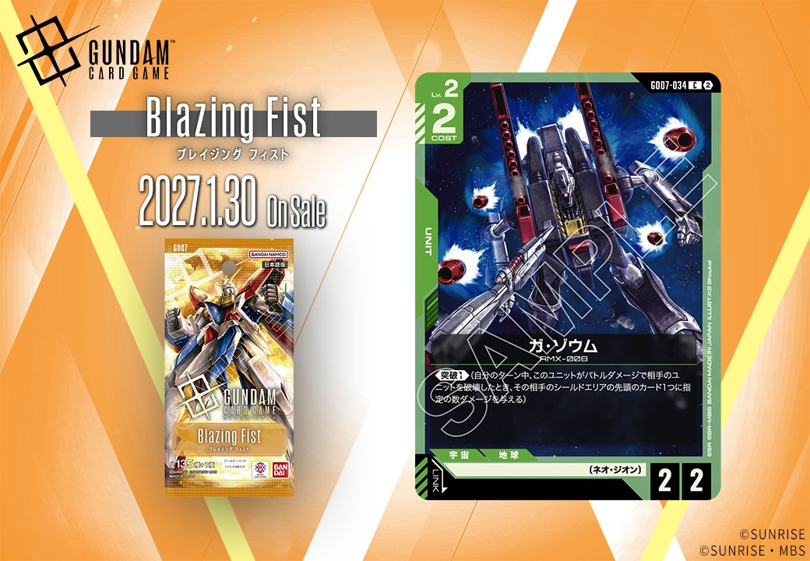
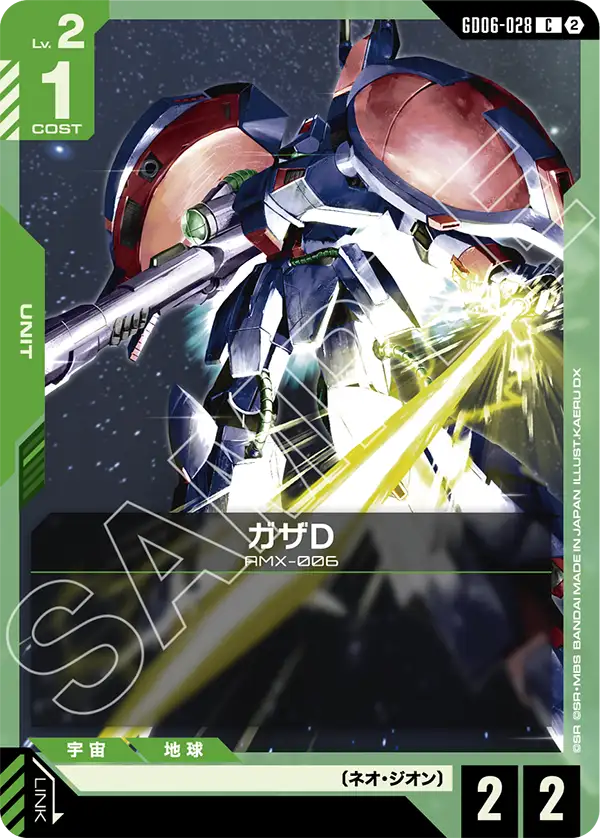

2027年1月30日発売のGD07から、新カード1枚を紹介します。取り上げるのは、カード番号GD07-034の緑のUNIT「ガ・ゾウム」です。

ガ・ゾウム (GD07-034)
| 色 | 緑 | タイプ | UNIT |
| Lv | 2 | コスト | 2 |
| AP | 2 | HP | 2 |
| 特徴 | 〔ネオ・ジオン〕 | ||
効果: 《突破1》(自分のターン中、このユニットがバトルダメージで相手のユニットを破壊したとき、その相手のシールドエリアの先頭のカード1つに指定の数ダメージを与える)
ガ・ゾウムは、Lv.2・コスト2、AP2/HP2の〔ネオ・ジオン〕ユニットで、リンクは設定されていません。効果は《突破1》のみです。自分のターン中にバトルダメージで相手ユニットを破壊すると、相手のシールドエリア先頭のカードに1ダメージを与えます。AP2で破壊できるのはHP2以下のユニットに限られるため、序盤の低コスト帯を狙う運用が中心になるでしょう。HP2同士の相打ちになっても、ユニットの除去とシールドへの圧力を一度に得られる点は評価できます。キュベレイが場にあれば、このカードにパイロットをセットした際、同カードの【ターン1回】のトークン配備も誘発させられます。
関連カード
-
 ハマーン・カーン(ST13-011)緑系デッキ内採用率3.3% (312デッキ)
ハマーン・カーン(ST13-011)緑系デッキ内採用率3.3% (312デッキ) -
 キュベレイ(ST13-001)緑系デッキ内採用率3.1% (296デッキ)
キュベレイ(ST13-001)緑系デッキ内採用率3.1% (296デッキ) -

ガザD(GD06-028)緑系デッキ内採用率0% (1デッキ)